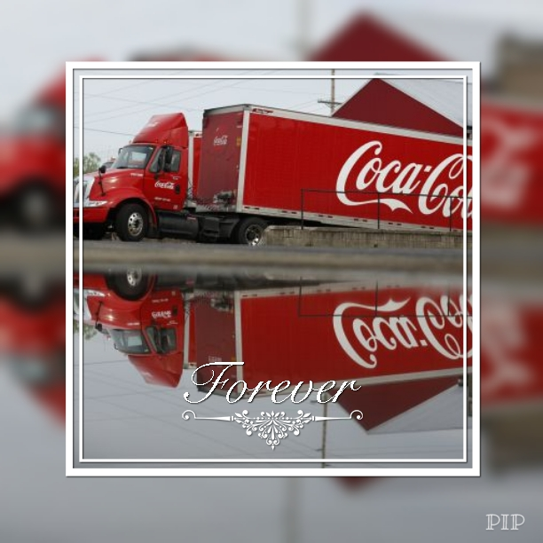

Por el mundo, a raíz de auge que llegó a tener la Coca Cola, se han propagado millones de curiosidades, inquietudes y cosas insólitas de las cuales algunas son verdades y otras falsas, portal motivo me he visto obligado a exponer unas cuantas verdades que muy poco se conocen al público sin perder la ética y respeto que merece esta empresa que ayuda a muchas organizaciones benéficas de todo el mundo y sustenta el trabajo de millones de personas que laboran en sus instalaciones en todo el mundo desde el obrero en la fábrica que embotella la gaseosa hasta el vendedor de la esquina. El mayor anuncio de Coca-Cola en el mundo está instalado sobre una colina. Su nombre es "El Hacha", en Arica (Chile), mide 122 metros de ancho por 40 metros de altura y está construido con 70.000 botellas de Coca-Cola.
Si se pusiera toda la Coca-Cola que se ha fabricado hasta ahora en botella de tamaño normal y se colocaran una detrás de otra, llegarían desde Mercurio hasta Júpiter, pasando por Venus, la Tierra y Marte. Si toda la Coca-Cola fabricada hasta ahora sustituyera el caudal de agua de las Cataratas del Niágara, esta corriente estaría fluyendo casi 37 horas , más de un día y medio.
La inmensa piscina en la que imaginariamente se vertiera toda la Coca-Cola que se ha fabricado hasta ahora tendría casi 30 km. de longitud y cerca de 13 km. de anchura. En esta gigantesca piscina cabrían 512 millones de personas. En un día normal en los Estados Unidos, 66 millones de personas toman Coca-Cola. El cliente con mayor volumen de ventas de Coca-Cola es el Varsity Restaurant de Atlanta, en el estado de Georgia. Sirve 3 millones de consumiciones al año. En 1943, un soldado americano destinado en Italia recibió de su familia dos botellas de Coca-Cola. En vez de bebérselas decidió subastarlas para obras benéficas y a 25c. el número consiguió 4.000$. Coca-Cola se parece a una nación en si misma. Sus representantes en el extranjero a menudo disfrutan de una posición similar a la de un embajador. Ha habido cinco temas musicales publicitarios de Coca-Cola que han alcanzado las primeras posiciones en las listas de éxitos europeas. Las máquinas expendedoras de Coca-Cola en Japón, donde hay más de 700.000, son muy sofisticadas. Puedes elegir incluso si quieres tomar el refresco frío o caliente.
El camión más largo de Coca-Cola está en Suecia: tiene 24 metros de longitud y un trailer de cuatro ejes. La mayor flota de camiones del mundo pertenece a Coca-Cola. El único medio para transportar Coca-Cola hasta los llamados "Alpes Japoneses", a casi 3.000 metros de altura es el helicóptero. Los fuertes vientos y las escarpadas pendientes no permiten aterrizar al helicóptero que debe mantenerse en el aire y soltar su carga con redes.
La mayor planta embotelladora de Coca-Cola esta en Santa Rosa, Filipinas. La planta de Dunquerque, Francia, enlata tres cajas y media de refresco en un segundo. La planta embotelladora de Shatin en Hong-Kong es la más alta del mundo. Tiene 25 pisos. En un principio la Coca-Cola supuestamente tenía propiedades curativas y medicinales, porque contenía cocaína. La Cocaína fue retirada de sus ingredientes en el 1903 y fue sustituida por la cafeína, otro tipo de estimulante. Según Warren Buffet, la Coca-Cola no tiene "memoria del sabor", en otras palabras es igual que el agua, nunca te cansarás de beberla. Podrías ser alérgico a la Coca-Cola y no saberlo, ya que tienen terminantemente prohibido revelar el secreto de la fórmula. Coca-Cola inventó el six-pack, para incentivar a la gente a beberla más seguido. La imagen actual de Santa Claus fue creada por Coca-Cola, a través de años y años de publicidad. Existen muchos más datos de interés, pero la verdad no se sabe si en realidad son reales. Uno de ellos dice que la fórmula de la bebida está en un banco de Atlanta pero nada está comprobado, por tal motivo dejo planteado lo que realmente existe, lo demás queda al criterio e investigación del lector en mis referencias. En fin , podemos entender la cantidad de curiosidades que se han generado a raíz de esta marca que deja mucho que desear y cuestionar ya que algunas de estas deja en duda por su tipo de exageración pero sea verdad o no, la cuestión es que se habla de esta bebida en temas mayores y que seguirán existiendo más inquietudes mientas exista esta botella.